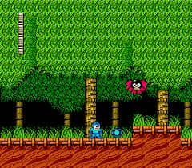
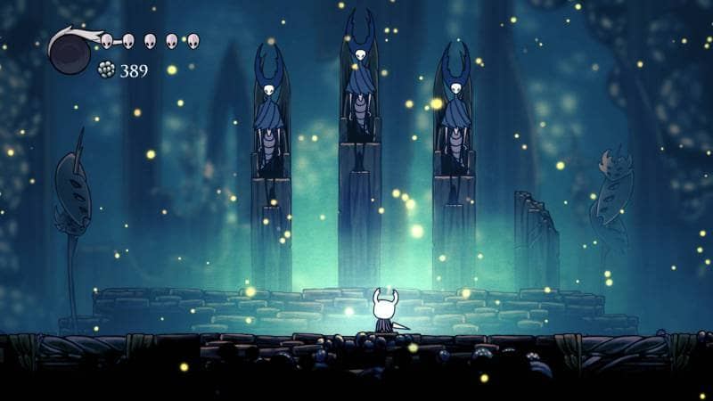
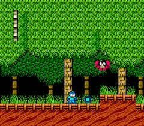
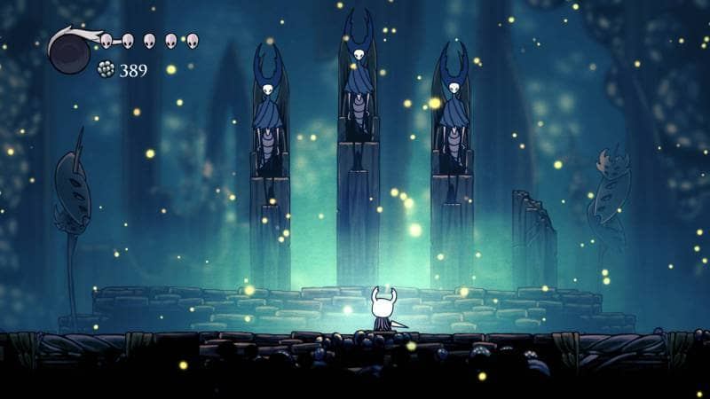

¿Qué son?
Los juegos de plataformas en 2D se caracterizan por integrar un personaje que actúa como un eje estático en la pantalla del cual uno toma control y dirige a lo largo de un mapa, donde el objetivo varía en dependencia del género superlativo del juego; este último puede ser llegar al final de un nivel en un tiempo determinado, explorar un mundo expansivo o reunir recursos para sobrevivir.
 


